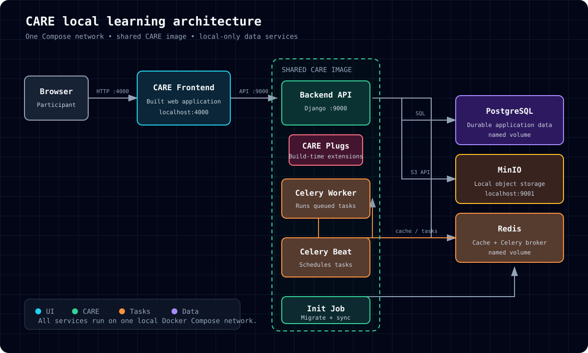
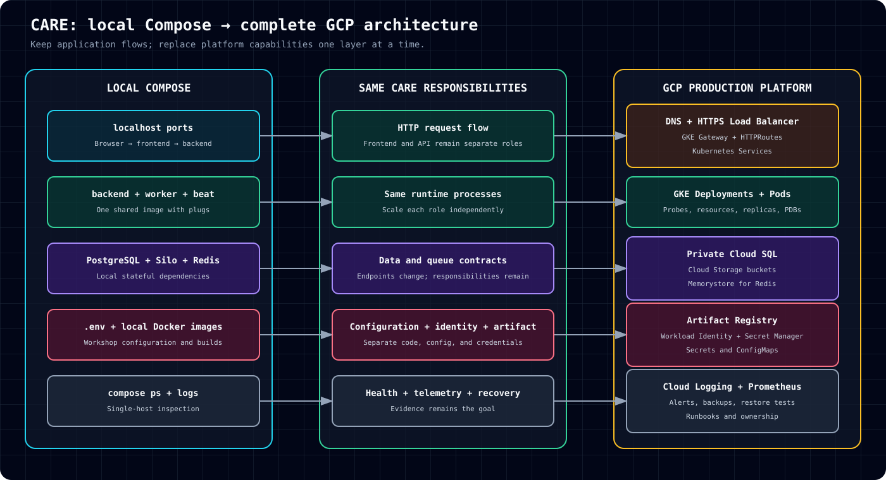
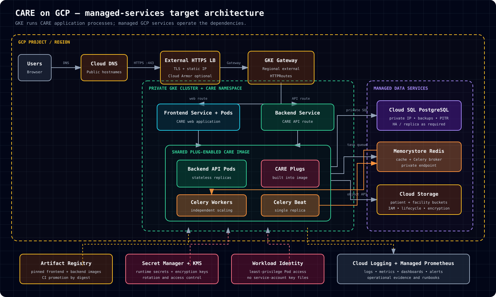

Serves the browser application on port 4000.
CARE Fundamentals · Session 3
Understand CARE locally.
Operate it on GCP.
A guided, hands-on path from one Docker Compose network to a managed-services production architecture.
- 01RunBuild the complete local stack
- 02TraceFollow requests, data and tasks
- 03TranslateKeep responsibilities; replace the platform
- 04VerifyCollect evidence before go-live
02 · Mental model
Start with one machine
Keep the architecture small enough to trace, without hiding the runtime roles CARE needs.

Three roles built from one plug-enabled image.
Relational records and uploaded objects.
Cache and Celery task transport.
03 · Local setup
Prepare the source
Clone the workshop and the two upstream CARE repositories, then create local-only configuration.
git clone https://github.com/jesbinjoseph/care-session.git
cd care-sessiongit clone --depth 1 --branch develop https://github.com/ohcnetwork/care.git
git clone --depth 1 --branch develop https://github.com/ohcnetwork/care_fe.gitcp .env.example .env
cp frontend.env.production.local care_fe/.env.production.localSafety boundary
Use synthetic records only. Never connect this workshop stack to production databases, buckets, Redis instances, APIs or credentials.
04 · Build and start
Bring CARE up
Resolve the service graph first. Then build and wait for each dependency to become healthy.
Review the stack
docker info
docker compose version
docker compose config --services
docker compose config --quietExpected roles: db, redis, silo, beat, backend, worker, frontend.
Build and start
docker compose up -d --build --waitThe first run downloads base images and builds both CARE repositories.
1Data servicesPostgreSQL · Redis · Silo
→
2Celery BeatMigrate · sync · become healthy
→
3ApplicationBackend · worker · frontend
05 · Evidence
Prove the stack works
Container startup is not completion. Verify application health and keep the output as workshop evidence.
docker compose ps -a
curl -f http://localhost:9000/ping/
curl -I http://localhost:4000/
docker compose exec backend python manage.py check06 · Follow the work
Trace four flows
Ask participants to name every hop before showing the answer.
Browser request
Browser → frontend → backend → PostgreSQL
File upload
Browser → backend → Silo
Background task
Backend → Redis → worker → PostgreSQL or Silo
Scheduled task
Beat → Redis → worker
docker compose logs -f frontend backend
docker compose logs -f worker beat
docker compose logs -f db redis silo07 · Extend CARE
Plugs live in the image
Plugs are Django extensions installed at build time—not independent runtime services.
SHARED CARE IMAGE
Backend API
Celery worker
Celery Beat
CARE plugs
One artifact, multiple roles
The API, worker and Beat must run the same tested, plug-enabled image. Compose changes only the process entry point.
ADDITIONAL_PLUGS=[]docker compose build --no-cache backend worker beat
docker compose up -d --wait08 · Translation
Keep the responsibilities
Replace platform capabilities one layer at a time. The CARE request, data and task flows remain recognizable.

frontend→GKE Deployment + Servicebackend · worker · beat→Independent GKE workloadsPostgreSQL · Silo · Redis→Cloud SQL · Cloud Storage · Memorystorelocalhost→DNS · HTTPS LB · Gateway · HTTPRoutes09 · Production target
Run CARE; manage the dependencies
GKE runs CARE application processes. Managed GCP services operate state, ingress, identity, artifacts and telemetry.

Users→Cloud DNS→HTTPS LB→GKE Gateway→CARE Services→Pods
Migration note
The current infrastructure repository runs Redis in GKE. Memorystore is the recommended managed target and requires separate compatibility testing and migration.
10 · Readiness gate
Evidence before confidence
A healthy local stack proves the learning flow. Production requires separate operational evidence.
DNS, TLS, routes and backend health
Resources, probes, replicas and disruption policy
Backups, PITR, lifecycle and tested restore
Workload Identity, IAM and secret rotation
Approved image digests and rollback target
Logs, metrics, alerts, runbooks and owners
Workshop complete
Can your team explain what stayed the same?
CARE responsibilities remain. The production platform adds managed networking, identity, durability, scaling, observability and recovery.